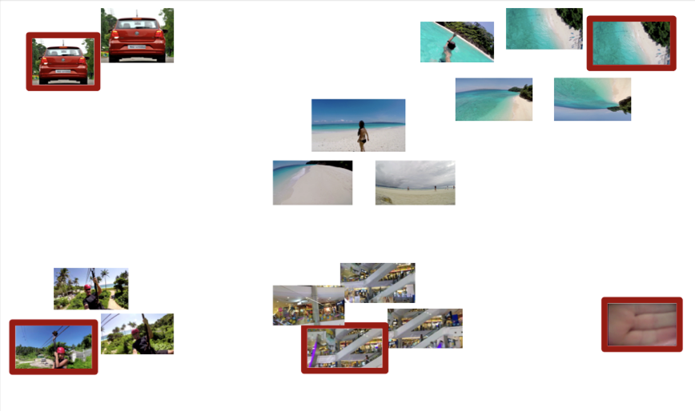
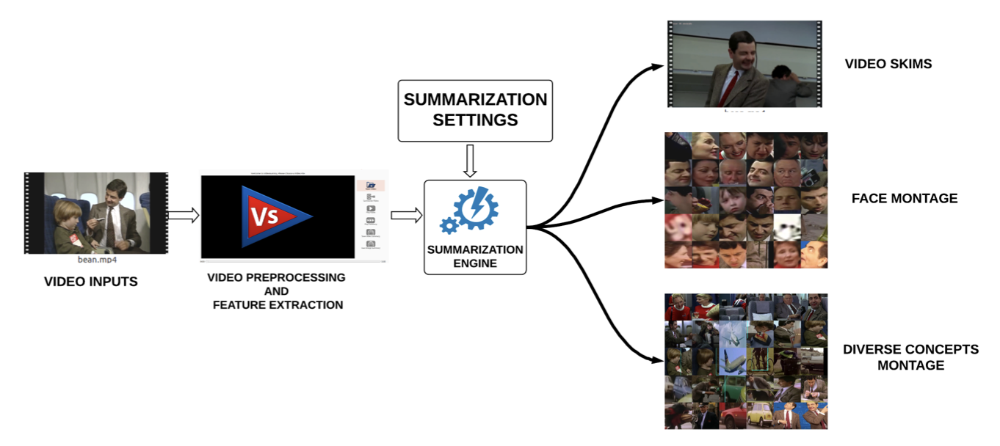
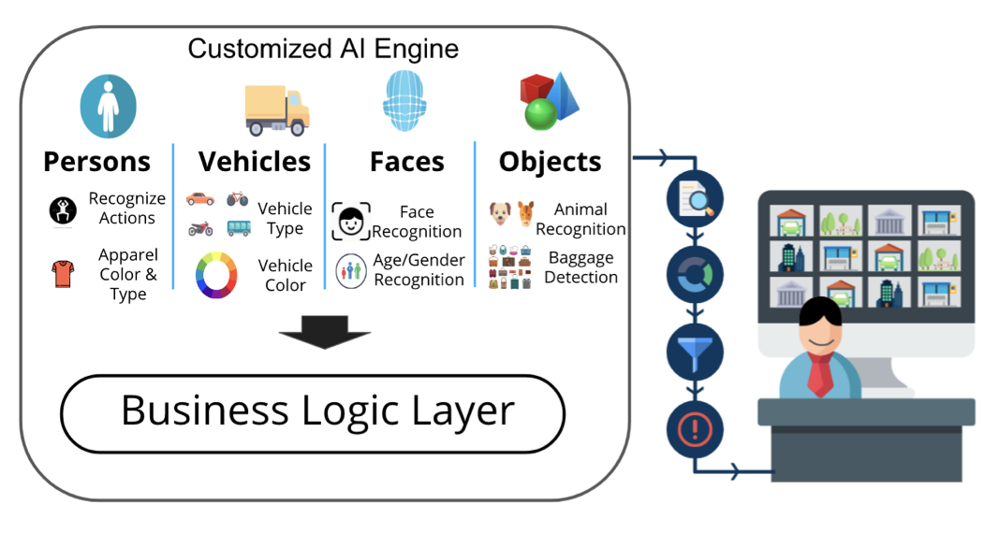
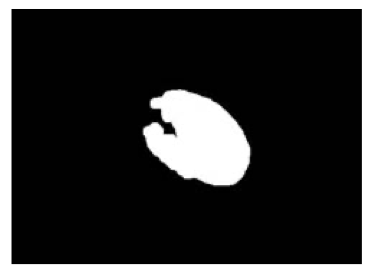

|
Pratik Dubal I'm a Senior Software Engineer at AI @ Meta in New York, working on building the Llama herd of models. At Meta I've worked on Llama 3+, Image Generation for Ads, Billion-scale Product Recognition and Visual Search. I obtained my Masters in Machine Learning at Columbia University, where I was advised by Peter Belhumeur. Prior to graduate school I led the Machine Learning Analytics team at AitoeLabs, where my work focused on building a real-time machine learning based video analytics engine. My research at AitoeLabs focused on using submodular optimization techniques to perform video summarization. |
{kind=link}
ResearchI'm interested in Deep Learning, Generative AI, Computer Vision and more recently Large Language Models. |

|
The Llama 3 Herd of Models
Llama Team, Pratik Dubal (Core Contributor) arXiv, 2024 Github First open-source frontier generative model with upto 405B parameters, native support for multilinguality, coding, reasoning, and tool usage. |
|  |
Demystifying Multi-Faceted Video Summarization: Tradeoff Between Diversity,
Representation, Coverage and Importance
Vishal Kaushal, Rishabh Iyer, Khoshrav Doctor, Anurag Sahoo, Pratik Dubal, Suraj Kothawade, Rohan Mahadev, Kunal Dargan, Ganesh Ramakrishnan WACV, 2019 arXiv Framework for multi-faceted summarization for extractive, query base and entity summarization (summarization at the level of entities like objects, scenes, humans and faces in the video). |
|  |
Vis-DSS: An open-source toolkit for visual data selection and
summarization
Rishabh Iyer, Pratik Dubal, Kunal Dargan, Suraj Kothawade, Rohan Mahadev, Vishal Kaushal arXiv, 2018 arXiv, Github Open-source toolkit for Visual Data Selection and Summarization using submodular optimization. |
|  |
Deployment of Customized Deep Learning based Video Analytics On
Surveillance Cameras
Pratik Dubal, Rohan Mahadev, Suraj Kothawade, Kunal Dargan, Rishabh Iyer arXiv, 2018 arXiv A comprehensive evaluation of different deep learning models on various real-world customer deployment scenarios of surveillance video analytics. |
|  |
Skin Cancer Detection and Classification
Pratik Dubal, Sankirtan Bhatt, Chaitanya Joglekar, Sonali Patil ICEEI, 2017 Open Access, Github Leveraging Image Processing and Neural Networks to detect and classify skin lesions. |
|
Rezence: wireless charging standard based on magnetic resonance
Pratik Dubal IJARCCE, 2015 Comparison of the Rezence wireless charging standard against other Wireless Power Transfer systems. |
Grants and Awards |
|
2020 Seed Grant for "Hidden in Plain Sight"
Columbia University Center for Science and Society Awarded a seed grant for our innovative interdisciplinary project entitled “Hiding in Plain Sight - Unlocking the Potential of Historical Data to Inform Biodiversity Conservation”, which quantified the impacts of a century of landscape changes on birds in the Western Ghats of southern India. |
|
|
|
Best Student Award - 2016/17
Adjudged to be the Best Student for the academic year 2016/17.
2nd Place - Project Competition at Prakalpa 2017
Secured the 2nd Place Prize at Prakalpa '17, a state-level conference for academic research projects, for my work on detection and classification of skin cancer.
Certificate of Merit (2014/15)
Awarded a certificate of merit for securing the highest marks in the subject of Automata Theory and Computer Networks. |
|
|
0.1% Merit Certificate
Awarded a merit certificate for being among the top 0.1% of successful candidates in Computer Science in India.
Outstanding Performance Merit Certificate
Awarded a merit certificate for obtaining the highest grade (A1) in all subjects in the nation-wide examination. |
Invited Talks |
|
GrokNet: Unified Computer Vision Model Trunk
and
Embeddings for Commerce
Skin Cancer Detection and Classification
Overview of DenseNet
Overview of Object Detection
Importance and Applications of Core Subjects in Computer Science
Topics in Computing: Cryptography, Ubuntu, Adobe Photoshop
|
Teaching |
|
Advanced Topics in Deep Learning
Applied Deep Learning
|
|
Website source code copied from Jon Barron. |